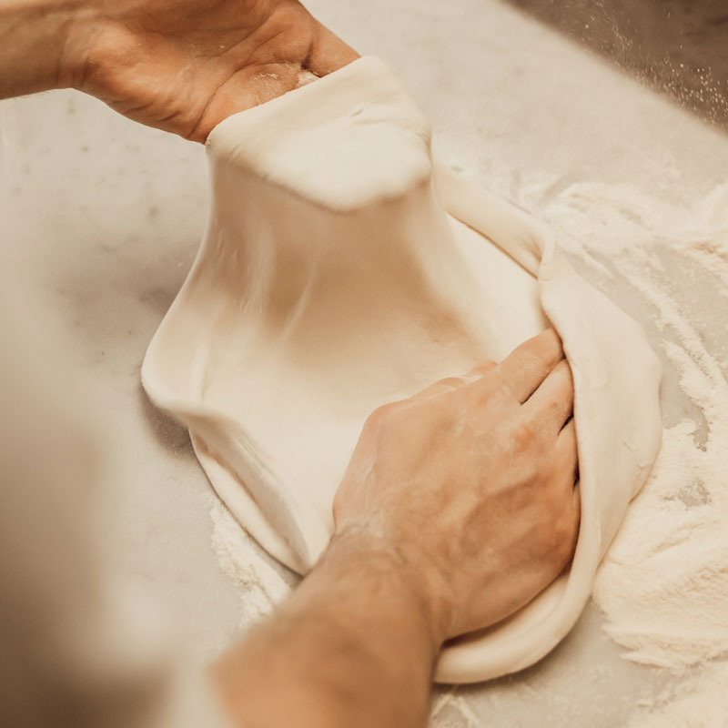
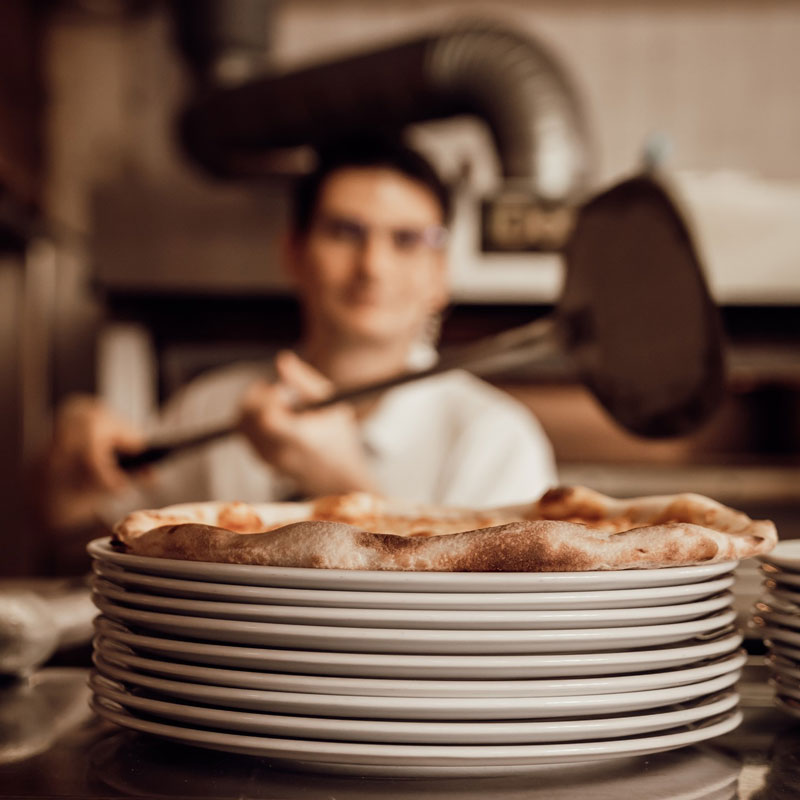
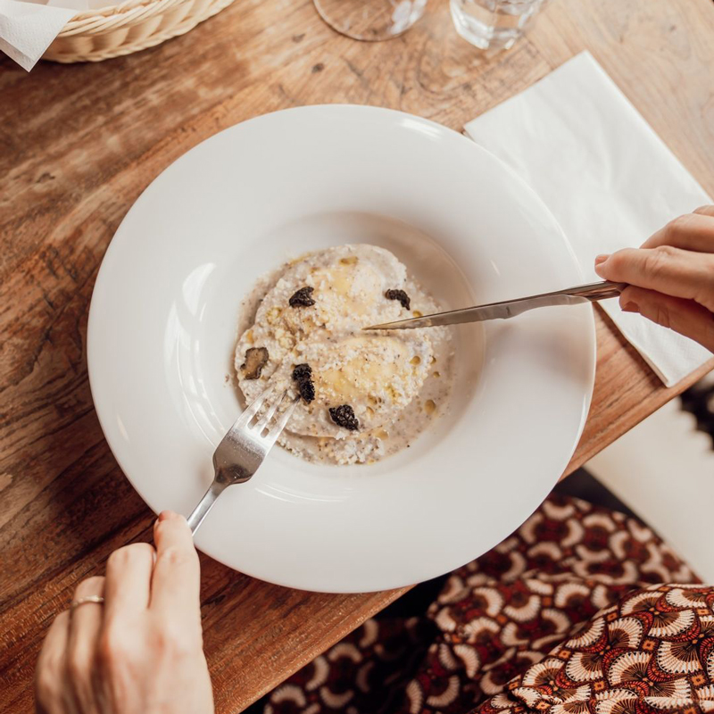
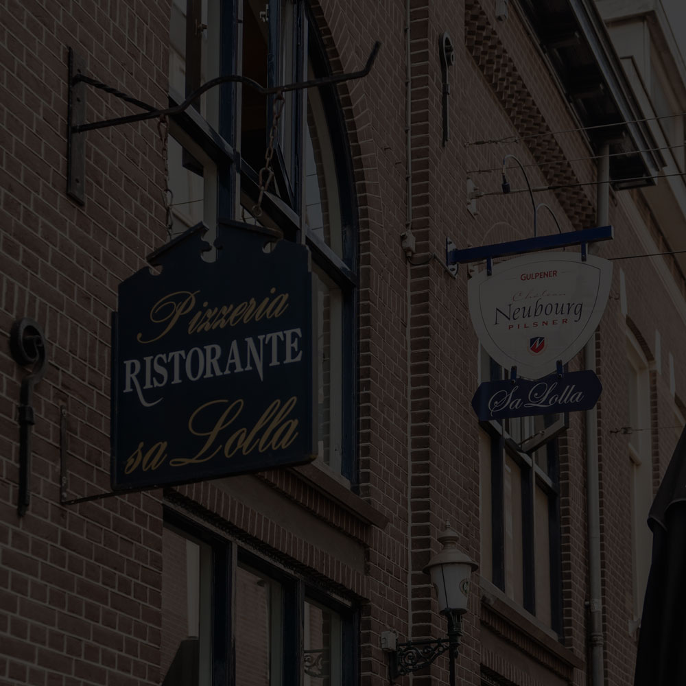
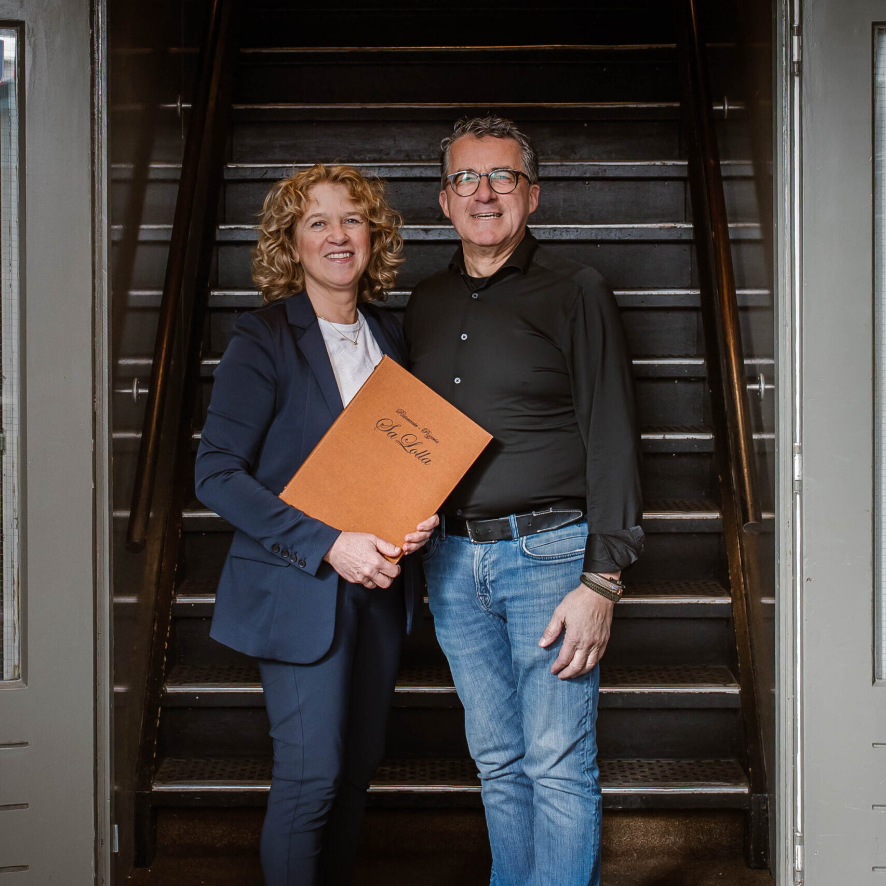
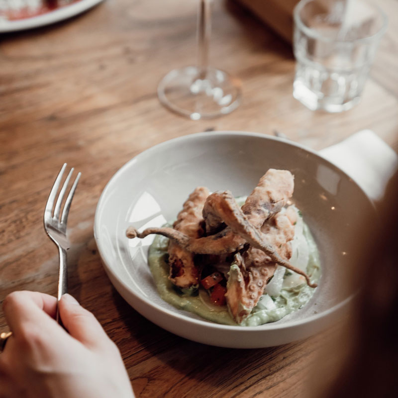
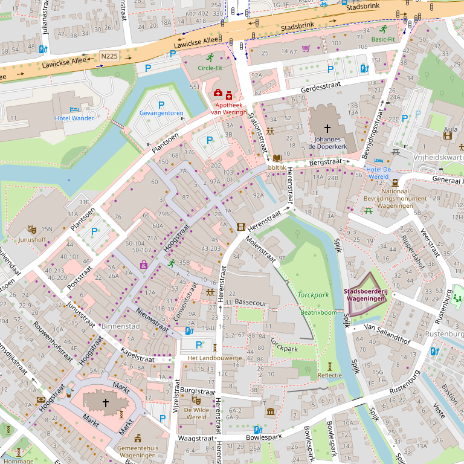

Ristorante – Pizzeria in Wageningen
Sa Lolla – Italiaans restaurant Wageningen
Hét Italiaanse restaurant in Wageningen, sinds 1978 in een monumentaal pand aan de Molenstraat.
Woensdag t/m zondag open vanaf 17:00




Al meer dan veertig jaar een begrip
Voor Wageningen en de wijde omtrek: door de gezellige sfeer, een bijzondere verzameling wijnen en de ruime keuze aan Italiaanse gerechten.
Sa Lolla serveert specialiteiten uit de authentieke Italiaanse keuken, bereid volgens originele recepten uit diverse regio’s van Italië. Naast de menukaart bereiden de koks verschillende dagspecialiteiten. Vraag ernaar aan tafel.
Een naam uit Sardinië
Sinds 1978 is Sa Lolla gevestigd in een monumentaal pand in een van Wageningens gezelligste horecastraatjes. Het restaurant dankt zijn naam aan een van de eerste restaurants op het Italiaanse eiland Sardinië: een authentiek restaurant onder de wijnranken in het zonnige dorpje Villasor.
Wie hier binnenstapt, krijgt een warm welkom met zuidelijke gastvrijheid en een maaltijd om niet te vergeten.


Vers en biologisch
Elke week wordt er verse vis gekeurd en ingekocht, voor een ruime keuze aan visgerechten. En Sa Lolla is al jaren koploper met biologisch vlees en zuivel in de gerechten.
Voor de bereiding worden zo veel mogelijk originele Italiaanse ingrediënten gebruikt. Kwaliteit, vooral Italiaanse kwaliteit.
Reserveren
Reserveer online of bel ons. Telefonisch bereikbaar van 13:00 tot 21:30, behalve op maandag en dinsdag.
0317 41 26 11Openingstijden
| Maandag | gesloten |
|---|---|
| Dinsdag | gesloten |
| Woensdag | 17:00 – 21:30 |
| Donderdag | 17:00 – 21:30 |
| Vrijdag | 17:00 – 21:30 |
| Zaterdag | 17:00 – 21:30 |
| Zondag | 17:00 – 21:30 |
Kerstvakantie: gesloten van 23 december t/m 1 januari.
Vind ons
Molenstraat 6
Wageningen
Werken bij Sa Lolla
Momenteel hebben wij geen vacatures open staan.

© OpenStreetMap-bijdragers